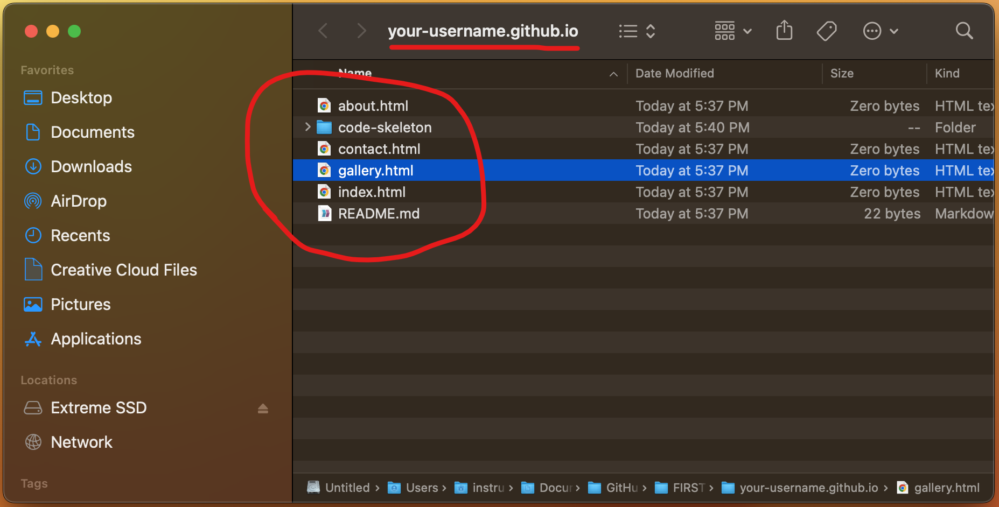

Importing Code
Moving things from one folder to another
-
First, you'll need to download whatever code template you need for your Exercise or Project.
We'll use the very first set of Drills as our example in this tutorial (basic-html-drills.zip).
Most likely, your downloaded code template ended up in the Downloads folder. It'll be a .zip file, which is just a compact file format typically used for sending over multiple files.
(Depending on your computer settings, there's a chance you might not see the .zip after the file name.
If so, don't worry; it's still the right file. In that case, you'll just have to identify the .zip file by its icon or the label in the "Kind" column, which would say "ZIP archive")Downloaded code template in the Downloads folder -
Right-click on that file, and select "Open With", and then "Archive Utility (default)".
(If you're on Windows, after right-clicking, you'll have to pick "Extract All" instead)
This is a process typically referred to as "unzipping" the .zip file.
Filtering via Categories (Handwriting in this case) -
After unzipping the template's zip file, you should see a new folder with the same name as the zip file.
Inside this folder is a set of folders and files, all of which we need inside of your code repository.
However, before we move the folder, we first need to figure out where we're moving it to.
The unzipped template code folder -
If you know where your repository is on your computer, you can just navigate there yourself in a separate Finder window.
However, if you don't know where it is or how to get there manually, then keep reading for a shortcut!
If you don't have it open already, open up Visual Studio Code and jump over there for a moment.
Look inside the Explorer panel: you should see the folders and files that already exist in your repository.
Go ahead and right-click any one of them.
Code repository in Visual Studio Code -
After right-clicking, a context menu opens up.
Select the option called "Reveal in Finder".
Selecting the "Reveal in Finder" option -
Clicking that option should open up a NEW Finder window, with all the files and folders we were just looking at in Visual Studio Code inside it.
It's important to remember that Visual Studio Code is just reflecting the state of that repository folder on your computer.
If it helps, think of Visual Studio Code like a special Finder window with a different visual style, that also allows you to modify the code of code files.
The repository in a Finder window -
By this point, you should now have TWO Finder windows open at once: one looking at your Downloads folder, and the other looking at your repository.
Select your unzipped code template folder (not the .zip file), and drag it from the Finder with your Downloads folder into the Finder with your code repository.
Moving the unzipped code template folder to our repository -
After doing that, you should see the unzipped code template folder in the Finder with your repository, alongside the other folders and files that were in there before.
Successfully moved the unzipped template to your repository -
What about Visual Studio Code? Well, let's pop back over there and take a look.
After moving the unzipped code template into your Finder window with your repository, you should now also see that unzipped folder in Visual Studio Code.
And that makes sense, because Visual Studio Code is just reflecting the state of that repository folder.
We moved something new into that folder, so we can see it in Visual Studio Code as well.
Let's open that new folder and see what's inside.
The unzipped template folder is also in Visual Studio Code -
Yup, that's the stuff we'd expect to have in there for basic-html-drills: a css folder, an images folder, and an index.html file.
Most of your code templates will probably have a similar structure as this one, just with different contents.
Let's open up index.html, just to double-check everything is working correctly.
PRO-TIP: Clicking on a file once will open a file in a "temporary" state; a file opened in a "temporary" state will have its name in italics in the tab that opens up.
A file in the "temporary" state will close itself once you click on another file just once.
To open up a file in a more "permanent" state, double-click it when you open it!
Then the file will remain open until you yourself close it.
Expanding the unzipped code template folder -
That looks like the code we'd expect: the title of the document says "Basic HTML Drills".
Assuming we're going to be working on this drill next, let's preview it!
The simplest way to do that is to right-click anywhere inside the HTML file's code.

The index.html file is opened -
After right-clicking, select the option that says "Show Preview".
If you don't see that option, first make sure that you right-clicked inside the HTML code.
You can only preview an HTML file, with HTML code; nothing else. So if you click in the wrong file or wrong area, you won't get that preview option.
If you're sure you're right-clicking in the right place, you may not have installed the required Extensions in Visual Studio Code.
Jump back to the Setup Tutorial Part 1 , and go through the last step again, so that you'll be able to preview your code.
The "Show Preview" option -
If all is well, you should see the Basic HTML Drills preview (or whatever code template you moved into your repository) in a new panel that popped open to the right.
Looks like you're set to go; well done!
Previewing index.html for the Basic HTML Drills